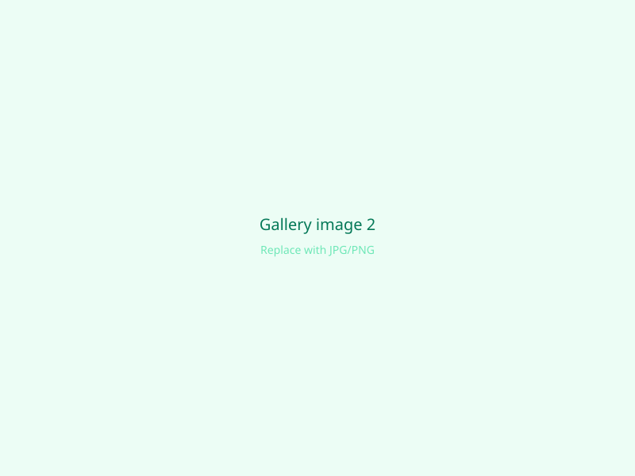

End‑to‑end mechanical design and documentation case study.
Overview
This project documents the complete mechanical design of a motor‑driven wiper linkage assembly, developed from initial concept through detailed CAD modeling, kinematic assembly definition, and manufacturing documentation. The work emphasizes functional motion control, part interoperability, and manufacturability. -->
Problem / Objective
The objective of this project was to design a motor‑driven wiper linkage capable of converting rotary motor input into controlled, synchronized output motion. The focus was on defining correct linkage geometry, motion constraints, and component interfaces to support accurate kinematics and production‑ready documentation.
Design Process
A complete linkage concept was developed through parametric CAD modeling and kinematic assembly definition. Components were modeled from scratch, assembled with motion constraints, and refined to verify smooth operation and logical assembly order prior to documentation release.
The final result is a fully defined wiper linkage assembly with validated kinematic behavior and complete manufacturing documentation. The design includes clear part relationships, an organized BOM, and an exploded assembly view suitable for communication with manufacturing, supplier quotation, and further development or program integration.
Image gallery

Video (optional)
Uncomment one of the blocks below. For YouTube: use Share → Embed → copy the src URL.
For Google Drive: File → Share → Anyone with link → Preview link, then use an embed/preview URL in iframe src.
No video embedded in the sample—add one using the comments above if needed.